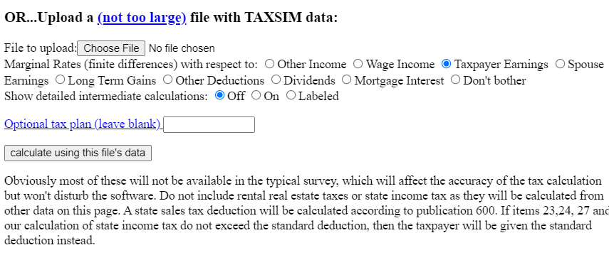

usincometaxes sends data to the National Bureau of Economic Research’s (NBER) TAXSIM 32 server. The data must meet TAXSIM 32’s requirements for data types and column names. usincometaxes performs checks to ensure the data will be accepted by TAXSIM 32. It’s possible, however, that issues will slip through. This can produce cryptic errors that might be hard to location. If you receive unresolveable errors, it could be helpful to manually upload your data to TAXSIM 32’s servers.
usincometaxes provides a function, create_dataset_for_taxsim(), to format your data for manual uploading. To use the function, prepare your dataset as you normally would to use taxsim_calculate_taxes(). For example, follow the formatting required for input columns. Then, supply the dataset to create_dataset_for_taxsim().
data(taxpayer_finances)
taxsim_dataset <- create_dataset_for_taxsim(taxpayer_finances)
#> All required columns are present and the data is in the proper format!
knitr::kable(head(taxsim_dataset))| taxsimid | year | mstat | state | page | sage | depx | dep13 | dep17 | dep18 | pwages | swages | dividends | intrec | stcg | ltcg |
|---|---|---|---|---|---|---|---|---|---|---|---|---|---|---|---|
| 1 | 2000 | 1 | 34 | 35 | 0 | 4 | 4 | 4 | 4 | 22701 | 0 | 6658 | 3375 | 1002 | 4390 |
| 2 | 2000 | 1 | 34 | 37 | 0 | 3 | 3 | 3 | 3 | 51359 | 0 | 2688 | 9005 | 304 | 2044 |
| 3 | 2000 | 2 | 34 | 47 | 46 | 0 | 0 | 0 | 0 | 8979 | 34126 | 500 | 7208 | 510 | 1500 |
| 4 | 2000 | 2 | 34 | 39 | 41 | 1 | 1 | 1 | 1 | 47239 | 36538 | 2559 | 2148 | 656 | 1226 |
| 5 | 2000 | 2 | 34 | 40 | 45 | 1 | 1 | 1 | 1 | 13756 | 3803 | 800 | 4623 | 571 | 1904 |
| 6 | 2000 | 2 | 34 | 34 | 34 | 4 | 4 | 4 | 4 | 10499 | 70023 | 10287 | 2124 | 833 | 2098 |
Then, save this dataset as a csv file to your local computer. It is recommended to use readr::read_csv() to write out the dataset. write.csv tends to pose issues. Also note that you can name the .csv file anything you wish.
taxsim_filename <- 'taxsim_dataset.csv'
vroom::vroom_write(taxsim_dataset, taxsim_filename)Now, manually upload the file taxsim_dataset.csv to TAXSIM 32’s server by going to (https://users.nber.org/~taxsim/taxsim32/), navigating to the following section of the page, and uploading the .csv file:

Errors from the manual upload could guide you in solving any data formatting issues.
You can also upload and download the TAXSIM dataset created with create_dataset_for_taxsim() from within R via ftp by using the following commands. Note that taxsim_filename in the code below is the file name to the TAXSIM dataset that we exported in the previous code block.
# create random user id for TAXSIM
user_id <- paste0(sample(letters, 10), collapse = "")
# username and password are publically listed, so we're not revealing private information
user_pwd <- 'taxsim:02138'
# ftp address to upload file
upload_address <- paste0("ftp://", user_pwd, "@taxsimftp.nber.org/tmp/", user_id, collapse = "")
# ftp address to download file
download_address <- paste0("ftp://taxsimftp.nber.org/tmp/", user_id, ".txm32", collapse = "")
# upload file
RCurl::ftpUpload(what = taxsim_filename, to = upload_address)
# retrieve results
results <- RCurl::getURL(download_address, userpwd = user_pwd)
# read in results
# wrap text in I to properly read in
vroom::vroom(results)